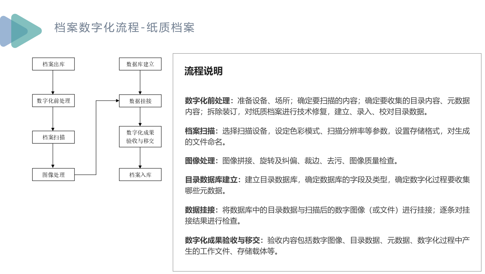
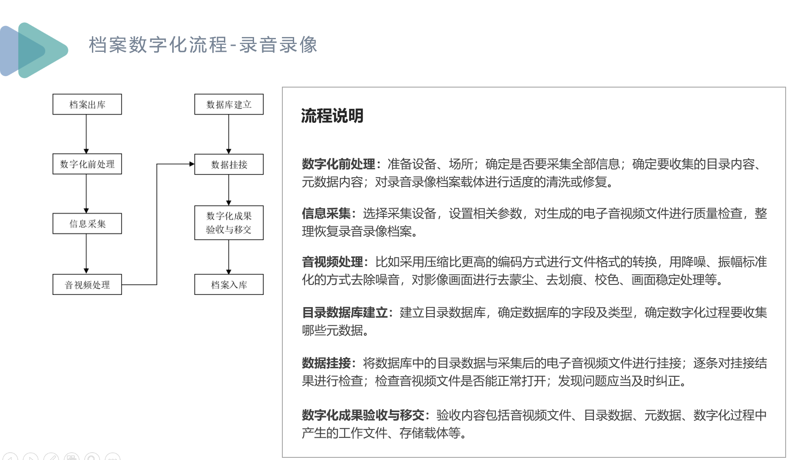

Investigation of common functionalities in digital archives system
This PPT records common functionalities of digital archives system, also describe responsibilities of National Archives Administration of China, introducton of Open Archival Information System (OAIS), metadata of digital archives, fundamental infrastructure of digital archives system, future of digital archives system etc.
Investigation of digital archives system
Traditional responsibilities of National Archives Administration of China
Significance of archive digitalization
Sequence of paper archive digitalization
Sequence of audio & video digitalization
General metadata and commonly used metadata standards

Introduction of Open Archival Information System(OAIS) model and its typical architecture

Fundamental infrastructure of digital archives system
Future development of digital archives system
Responsibilities of project management in digital archives projects